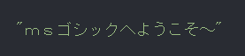
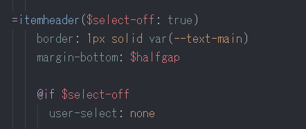
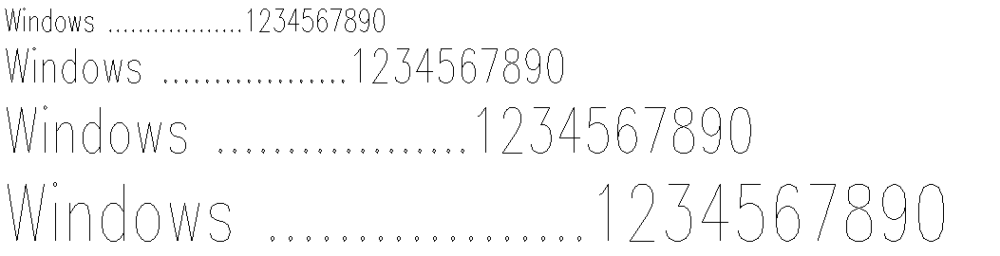

the best font for writing code
Recently, I started using a new font for...well, for everything that I could reasonably use it for. this font is called ms pgothic, and it comes with all versions of windows since windows xp, and all japanese versions of windows since windows 95. of course, it's mainly made as a typeface to support japanese type, but has latin characters as well.
this is such a nice font to me, mainly because it feels so clean and crisp. I'm a huge fan of simple fonts with that non-antialiased look. on top of that, the japanese characters look super crisp and readable to me, which is useful because I do write in japanese quite a bit.
I've been using it for all my code-writing needs for weeks with no fatigue at all.
I pretty much used to ignore all the default cjk fonts on windows and used google fonts for anything that needed to be in japanese, not realizing how nice this default japanese font was.
another similar font (seen above) that I was enamored with is called modern.fon. it's an old vector font from windows millenium edition. I literally cannot figure out how to use it in any application, and I haven't been able to test it out, unfortunately. I don't think it has any japanese support, either...oh well.
this was sort of a random post that I was interested in writing for a couple of weeks, but due to real life I've been behind on my blog. be back soon with a slightly more meaningful post!
currently listening to:
- dear eternity by nhato
- u & i by uplift spice
- so by advantage lucy
- 群青 by ゆくえしれずつれづれ